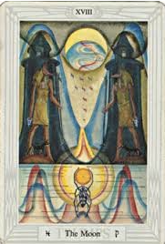

El Tarot de Thoth te trae un mensaje de intuición y revelación. ✨
La carta de *La Luna* representa el misterio, los ciclos ocultos y la necesidad de confiar en la intuición. Hoy podrías enfrentar situaciones ambiguas que te invitan a mirar más allá de las apariencias.
Este es un día para conectar con tu subconsciente. Las respuestas que buscas están dentro de ti. Confía en tus corazonadas.
Podrías tener sueños o visiones que te revelen información importante. Presta atención a las señales y símbolos.
La Luna también puede generar confusión o engaños. No tomes decisiones importantes sin antes reflexionar o consultar con alguien de confianza.
Podría surgir una conexión profunda a nivel emocional. Sin embargo, es importante distinguir entre fantasía y realidad.
Los cambios o información inesperada podrían desestabilizarte. Mantén la calma y busca claridad antes de actuar.
Evita riesgos financieros hoy. Podría haber engaños o confusión en temas económicos.
Escucha las señales de tu cuerpo. Podrías necesitar descansar o realizar meditación para equilibrar tus emociones.
"Acepto el misterio de la vida.
Mis sueños y visiones me guían hacia la verdad.
Hoy confío en mi intuición."